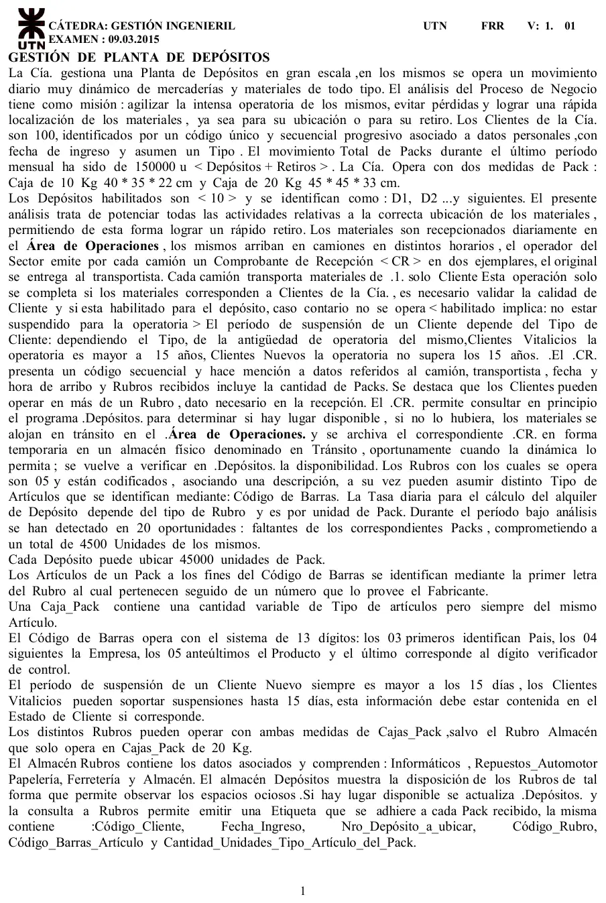
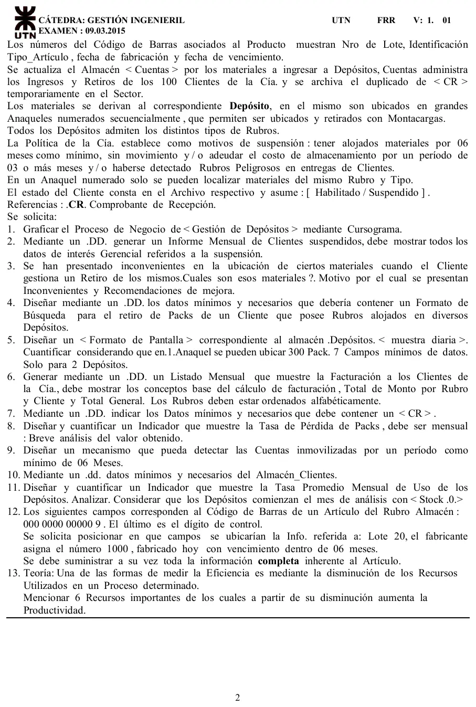

Final, 09/03/2015
Final, 09/03/2015
Enunciado




Propuesta de respuesta
Respuesta no verificada. La propuso Luta Studios con inteligencia artificial y ningún docente la revisó. Puede tener errores.
1. Cursograma
Una columna por sector, con los símbolos del resumen de un alumno que usa la materia. Los almacenes lógicos van al costado con flecha punteada, que apunta al almacén si lo actualiza y a la operación si lo consulta. El número chico de cada documento es el ejemplar. El conector B vuelve a la consulta de Depósitos cuando los materiales salen de tránsito. Tocá el dibujo para verlo en pantalla completa.
2. Informe mensual de clientes suspendidos
Informe_suspendidos = titulo + mes + detalle(e) + totales(e)
detalle(e) = cod_cliente + apellido_nombre + tipo(d) + fecha_ingreso
+ motivo(d) + fecha_suspension + dias_suspension
+ rubros_alojados + packs_alojados + (deuda_almacenamiento)
tipo(d) = <vitalicio | nuevo>
motivo(d) = <6 meses sin movimiento | deuda de 3 meses o más
| rubro peligroso>
totales(e) = total_suspendidos + total_vitalicios + total_nuevos
+ total_sin_movimiento + total_con_deuda
+ total_rubro_peligrosodetalle(e) se repite por cada cliente suspendido en el mes, ordenado por código. La deuda va entre paréntesis porque solo la tiene quien se suspendió por deuda. Los días de suspensión dependen del tipo, más de 15 para un cliente nuevo y hasta 15 para un vitalicio. Los totales por motivo le dicen a la gerencia por qué se suspende y si la política pega más en los clientes nuevos.
3. Inconvenientes al ubicar materiales para un retiro
Cuáles. Los que pasaron por En Tránsito y los de clientes con rubros en varios depósitos.
Por qué. La etiqueta y el almacén Depósitos guardan el número de depósito, pero no el anaquel. Cada depósito tiene lugar para 45000 packs, así que encontrar uno es buscarlo anaquel por anaquel. Los que estuvieron en tránsito se ubican después, cuando la dinámica lo permite, y su CR quedó en un archivo físico. La ubicación final no queda asociada a la recepción. Las 20 faltas del período van en la misma línea.
Recomendaciones.
- Sumar el número de anaquel a la etiqueta y a Depósitos.
- Registrar la ubicación en el momento de dejar el pack, leyendo su código de barras.
- Pasar En Tránsito a un almacén lógico, con fecha y lugar provisorio.
- Usar el formato de búsqueda de la consigna 4 para cada retiro.
4. Formato de búsqueda para un retiro
Formato_busqueda = cod_cliente + apellido_nombre + fecha_retiro
+ ubicacion(e)
ubicacion(e) = nro_deposito + nro_anaquel + cod_rubro
+ cod_barras_articulo + tipo_caja(d) + cantidad_packs
tipo_caja(d) = <10 kg | 20 kg>ubicacion(e) se repite por cada depósito y anaquel donde el cliente tiene packs, ordenado por depósito y anaquel para recorrerlos en orden. Como en un anaquel solo hay un rubro y un tipo, alcanza con esos dos datos para saber qué buscar.
5. Formato de pantalla del almacén Depósitos
Cada depósito ubica 45000 packs y cada anaquel 300, así que hay anaqueles por depósito.
Depósitos. Muestra diaria
| Fecha | Depósito | Anaquel | Rubro | Capacidad | Ubicados | Libres |
|---|---|---|---|---|---|---|
| 09/03/2015 | D1 | 1 | Informáticos | 300 | 300 | 0 |
| 09/03/2015 | D1 | 2 | Ferretería | 300 | 180 | 120 |
| … | D1 | … | … | … | … | … |
| Total | D1 | 150 | 45000 | 31500 | 13500 | |
| 09/03/2015 | D2 | 1 | Almacén | 300 | 260 | 40 |
| 09/03/2015 | D2 | 2 | Sin asignar | 300 | 0 | 300 |
| … | D2 | … | … | … | … | … |
| Total | D2 | 150 | 45000 | 27000 | 18000 |
Son los 7 campos que pide la consigna. La capacidad y los anaqueles salen de la narrativa, y los ubicados son de ejemplo. La columna de libres muestra los espacios ociosos, que es lo que la narrativa dice que deja ver el almacén.
6. Listado mensual de facturación
Listado_facturacion = titulo + mes + cliente(e) + total_general
cliente(e) = cod_cliente + apellido_nombre + rubro(e) + total_cliente
rubro(e) = nombre_rubro + tipo_caja(d) + cantidad_packs
+ dias_alojados + tasa_diaria + monto_rubrocliente(e) se repite por cada cliente y, dentro de cada uno, rubro(e) por cada rubro que tiene alojado, en orden alfabético. Son Almacén, Ferretería, Informáticos, Papelería y Repuestos_Automotor. La tasa diaria depende del rubro y se cobra por pack.
7. DD del comprobante de recepción
CR = nro_CR + fecha + hora_arribo + patente_camion
+ nombre_transportista + cod_cliente + rubros(e)
rubros(e) = cod_rubro + cantidad_packsrubros(e) se repite por cada rubro recibido, porque un cliente puede operar en varios. Cada camión trae materiales de un solo cliente, así que va un solo código.
8. Tasa de pérdida de packs
Faltan 3 de cada 100 packs que se mueven. Son solo 20 episodios, de 225 packs en promedio cada uno, así que no son pérdidas sueltas sino lotes enteros. Apunta a materiales mal ubicados o sin registrar, como en la consigna 3, más que a robos de a uno.
9. Detectar cuentas inmovilizadas
Cuentas registra cada ingreso y retiro con su fecha. A cada cuenta se le agrega la fecha del último movimiento, y una vez por mes un proceso recorre el almacén y lista las que cumplen esto.
El listado sale con cliente, rubros y packs alojados, fecha del último movimiento y meses sin movimiento. Es el primer motivo de suspensión de la política de la Cía., así que alimenta el informe de la consigna 2.
10. DD del almacén Clientes
Clientes = cod_cliente + datos_personales(e) + fecha_ingreso + tipo(d)
+ estado(e)
datos_personales(e) = apellido + nombre + tipo_doc + nro_doc
+ domicilio + telefono
tipo(d) = <vitalicio | nuevo>
estado(e) = situacion(d) + (fecha_suspension) + (dias_suspension)
situacion(d) = <habilitado | suspendido>El período de suspensión va dentro del estado, como pide la narrativa, y solo si está suspendido. Vitalicio es quien opera hace más de 15 años.
11. Tasa promedio mensual de uso de los depósitos
Son 10 depósitos de 45000 packs. Con stock 0 al empezar, todo lo que hay salió del movimiento del mes.
Por depósito, son 15000 de 45000 lugares. Es el uso máximo posible, porque las 150000 unidades también cuentan los retiros. Como la narrativa no los separa, el uso real es menor. Dos tercios de la capacidad quedan ociosos, y conviene concentrar los rubros en menos depósitos o salir a buscar clientes.
12. Campos del código de barras
| Campo | Dígitos | Qué va |
|---|---|---|
| País | 1 a 3 | 000, como en la hoja |
| Empresa | 4 a 7 | 0000, como en la hoja |
| Producto | 8 a 12 | A1000, la A del rubro Almacén y el número 1000 que da el fabricante |
| Verificador | 13 | 9, como en la hoja |
El lote y las fechas no entran en los 13 dígitos. La narrativa dice que los números asociados al producto muestran el lote, el tipo de artículo y las fechas, así que van en el registro del artículo, atado a ese código.
Articulo = cod_barras + cod_rubro + tipo_articulo + nro_lote
+ fecha_fabricacion + fecha_vencimiento
cod_barras = 000 0000 A1000 9
tipo_articulo = A1000
nro_lote = 20
fecha_fabricacion = 09/03/2015
fecha_vencimiento = 09/09/201513. Teoría. Recursos que, si bajan, suben la productividad
El apunte Indicadores de Gestión, página 7, da estos ejemplos. Alcanza con seis.
- Costos utilizados en operaciones de trabajo repetitivo.
- Tiempos utilizados en operaciones de trabajo repetitivo.
- Horas hombre utilizadas en operaciones de trabajo repetitivo.
- Número de horas extras.
- Tiempos de implantación.
- Plazos de tiempo.
- Duración de un ciclo.
- Desgaste de equipos.
- Uso de máquinas y equipamiento.
Respuesta no verificada. Puede tener errores.
Se armó con las páginas del parcial y del final, secciones Cursograma, Diccionario de datos, Reportes, Indicadores de gestión y Consumo de recursos.
Quedó en duda: La narrativa no dice qué pasa con el original del comprobante de recepción cuando el cliente no está habilitado, ni si el duplicado pasa a Cuentas cuando los materiales salen de tránsito. En la consigna 11, las 150000 unidades suman depósitos y retiros sin separarlos, así que el 33.3 % es el uso máximo. Si «promedio» se lee como el promedio de los días del mes, con el stock creciendo desde 0, da menos. En la consigna 12 el producto lleva una letra, que un código de barras de 13 dígitos no admite. Se toma la regla de la narrativa, primera letra del rubro y número del fabricante, y «fabricado hoy» como la fecha del examen. Los valores de la pantalla de la consigna 5 son de ejemplo, salvo la capacidad. Los cursogramas y el DD salen de material de alumnos, porque el Drive no tiene el apunte de la cátedra.
¿Cómo te fue?
Marcá cada tema del examen.
- CursogramaCursograma, en Parcial de aprobación directa
- DDCómo viene el examen, en Parcial de aprobación directa
- IndicadoresIndicadores de gestión, en Parcial de aprobación directa
- MejorasFallas y mejoras, en Parcial de aprobación directa
- ProductividadProductividad, competitividad y recursos, en Final